第13讲-总线
总线概述
类型
- 芯片内部总线：连接芯片内部的各个部分
- 例：CPU 中连接寄存器、ALU 等部分
- 系统总线：连接CPU 、存储器、IO 控制器和其他功能设备
- 通信总线：连接主机和I/O 设备，或连接不同的计算机系统
- 芯片内部总线：连接芯片内部的各个部分
总线结构
- 数据线：在系统组件之间传输数据
- 数据线的数量决定了一次可以传输的数据的大小
- 地址线：在数据线和地址I/O 端口上指定数据的来源和去向
- 地址线的数量决定了寻址空间的大小
- 控制线：控制对数据线和地址线的存取和使用
- 时钟（clock）：用于总线同步操作
- 总线请求（bus request）：表示模块需要获得对总线的控制
- 总线允许（bus grant）：发出请求的设备已经被允许控制总线
- 中断请求（interrupt request）：表示某个中断正在悬而未决
- 中断响应（interrupt ACK）：未决的终端请求被响应
- 存储器读（memory read）：从存储器读数据到总线
- 存储器写（memory write）：将数据从总线写入存储器
- I/O读（I/O read）：从I/O 端口读数据到总线
- I/O写（I/O write）：将数据从总线写入I/O 端口
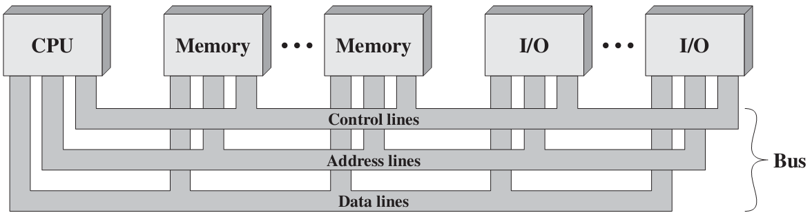
- 数据线：在系统组件之间传输数据
- 总线上数据传输的特点
- 总线可以被多个设备监听，但同一时刻只能由一个设备发送数据
- 如果同一时刻多个设备同时发送数据，会造成数据之间的混淆
- 使用总线进行数据传输
- 如果连在总线上的某个设备希望向另一个设备发送数据，需要：
- 获得总线的使用权
- 通过总线传送数据
- 如果连在总线上的某个设备希望向另一个组件请求数据，需要：
- 获得总线的使用权
- 通过总线向另一个设备发送请求，等待另一个设备发送数据
- 如果连在总线上的某个设备希望向另一个设备发送数据，需要：
- 当总线在被使用过程中，其它设备不可以抢占
- 总线可以被多个设备监听，但同一时刻只能由一个设备发送数据
设计要素
用途：专用总线，复用总线
- 专用（dedicated）总线：始终只负责一项功能，或始终分配给特定的计算机组件
- 优点：高吞吐量，减少总线冲突
- 缺点：增加了系统的规模和成本
- 复用（multiplexed）总线：将同一线路用于多种用途
- 优点：使用的布线数量少，节省空间和成本
- 缺点：每个模块需要更复杂的控制电路，且共享可能会降低性能
- 专用（dedicated）总线：始终只负责一项功能，或始终分配给特定的计算机组件
仲裁（arbitration）：当多个设备需要与总线通信时，通过某种策略选择一个设备
- 平衡因素
- 优先级：优先级高的设备优先被服务
- 公平性：优先级最低的设备不能一直被延迟
- 仲裁方案
- 集中式（centralized）：由仲裁器（arbiter）或总线控制器（bus controller）负责分配总线使用权
- 链式查询/菊花链（daisy chain）
- 计数器查询（query by a counter）
- 独立请求（independently request）
- 分布式（distributed）：每个设备都包含访问控制逻辑，各设备共同作用分享总线
- 自举式（self selection）
- 冲突检测（collision detection）
- 集中式（centralized）：由仲裁器（arbiter）或总线控制器（bus controller）负责分配总线使用权
- 链式查询
- 所有的设备都是串行连接的，并将允许信号从优先级最高的设备下发到优先级最低的设备。
- 总线仲裁器收到请求后，在总线不忙的前提下，发起允许信号。
- 如果某个设备收到了允许信号并且发起了总线请求，该设备将总线设置为繁忙状态，允许信号将不再被进一步传递。
- 优点：确定优先级很简单；可以很灵活地添加设备。
- 缺点：不能保证公平性；对电路故障敏感；限制总线的速度。
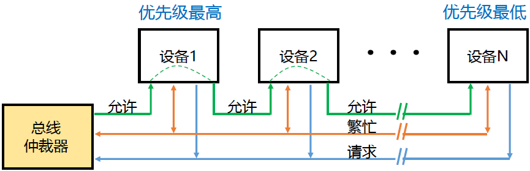
- 计数器查询
- 将总线允许线替换为设备ID（地址）线
- 当总线仲裁器收到总线请求信号，判断总线空闲时，计数器开始计数，计数值通过设备ID 线发向各个部件
- 如果当前发送请求的设备ID 等于裁决器当前的计数，裁决器将停止计数，设备将总线设置为繁忙
- 优点
- 通过使用不同的初始计数，可以灵活地确定设备优先级
- 强调优先级：从1 开始
- 强调公平性：从下一个设备的ID 开始
- 对电路故障不敏感
- 通过使用不同的初始计数，可以灵活地确定设备优先级
- 缺点
- 需要添加设备ID 线
- 需要解码和比较设备ID 信号
- 限制总线的速
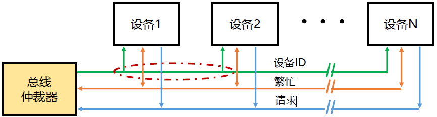
- 独立请求
- 每个设备都有自己的总线请求线和总线允许线
- 当一个设备请求总线时，它通过总线请求线将请求信号发送给总线仲裁器
- 总线仲裁器决定哪个设备可以使用总线
- 确定策略：固定优先级，公平链式，LRU，FIFO
- 优点：快速响应；可编程的优先级
- 缺点：复杂的控制逻辑；更多的控制线路
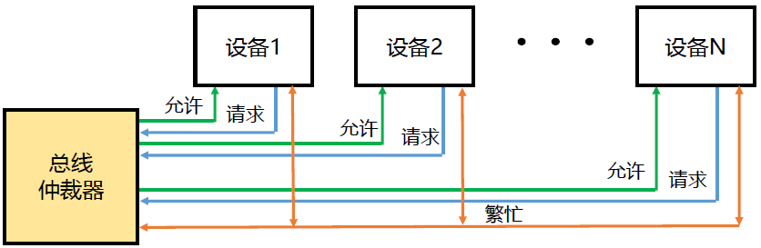
自举式
固定优先级
每个设备在其总线请求线上发送请求
- 最低优先级的设备没有请求线
每个设备自行判断自己是否在请求总线的设备中优先级最高
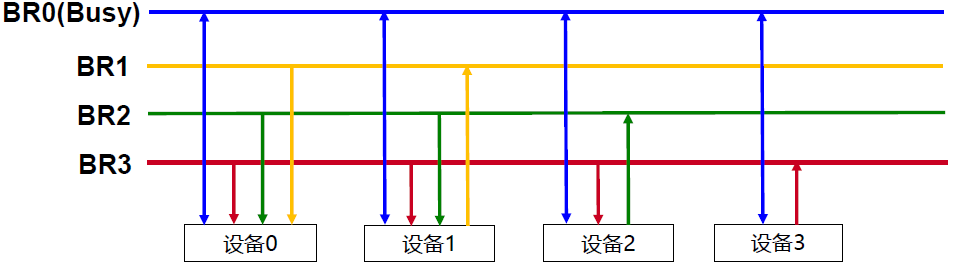
冲突检测
当一个设备想要使用总线时，它会检查总线是否繁忙
- 如果总线空闲，设备使用总线
冲突：如果两个设备发现总线空闲，它们可能同时使用总线
- 在传输数据时，设备会监听总线，检查是否存在冲突
- 如果发生冲突，所有使用总线的设备将停止数据传输，并分别在随机时间间隔后再次请求总线
- 平衡因素
时序（timing）
- 确定每个总线事务的开始和结束时间
- 总线事务：地址+ 数据+ … + 数据
- 同步时序：事件的发生由时钟决定
- 优点：更容易实现和测试
- 缺点：所有设备共享同一个时钟；总线长度受到时钟偏差的限制
- 异步时序：一个事件的发生取决于前一个事件的发生（顺序）
- 握手策略
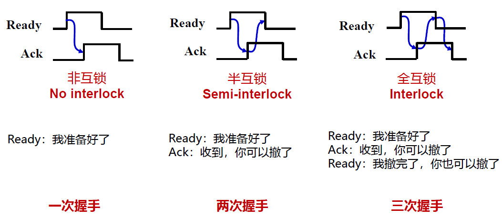 - 异步数据传输
- CPU设置地址并设置 ReadReq 线
- 存储器读取相应地址并设置Ack 线
- CPU释放地址线和ReadReq 线
- 存储器释放Ack 线
- 存储器将数据传到数据线并设置DataRdy 线
- CPU读取数据并设置Ack 线
- 存储器释放数据线和dataRdy 线
- CPU 释放Ack 线
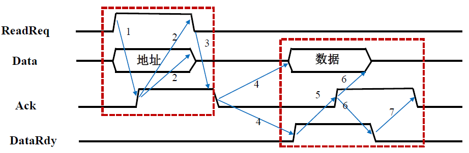
- 优点：可以灵活地协调速度不同的设备
- 缺点：接口逻辑复杂；对噪声敏感（被误认为信号）
- 握手策略
- 半同步：同步时序和异步时序相结合
- 为了减少噪声的影响，在异步计时中使用时钟
- 准备和响应信号在时钟上升沿有效
- 半同步通信集同步与异步通信之优点，既保留了同步通信的基本特点
- 所有的地址、命令、数据信号的发出时间，都严格参照系统时钟的某个前沿开始，而接收方都采用系统时钟后沿时刻来进行判断识别。
- 同时又像异步通信那样，允许不同速度的模块和谐地工作。为此增设了一条“等待”( )响应信号线。
- 半同步时序的读命令
- 主模块在T1发出地址，T2发出命令
- 从模块工作速度较慢，无法在下一时钟周期时刻提供数据，则必须在T3之前通知主模块，使其进入等待状态，此刻，从模块置$\overline{\text{WAIT}}$为低电平有效。主模块在测得$\overline{\text{WAIT}}$有效，则不立即从数据线上取数。
- 主模块等待，直到测得$\overline{\text{WAIT}}$为高电平即等待无效时，主模块即把此刻的下一周期当作正常周期T3，即时获取数据，T4结束传输。
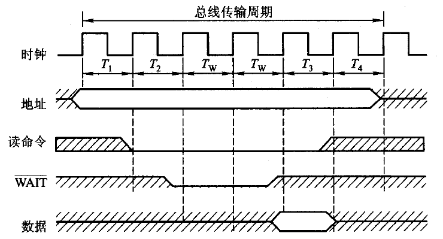
- 参考文章：总线的半同步通信-CSDN博客
- 分离事务：设备准备数据期间释放总线
- 将一个总线事件分离为两个过程
- 优点：增加总线利用率
- 缺点：增加每个总线事件的持续时间和系统复杂度
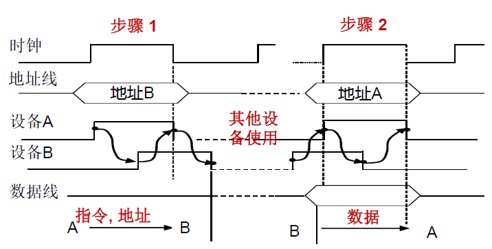
总线带宽（bandwidth）：总线的最大数据传输速率。不要考虑总线仲裁、地址传输等因素。
- 数据传输速率（data transfer rate）：考虑地址传输、握手等因素。
- 例题1：假设同步总线的时钟周期为50 ns，每次传输需要一个时钟周期，异步总线每次握手需要40 ns 。两个总线都是32 位宽，内存的数据准备时间为200 ns 。当从存储器中读出一个32 位的字时，计算两个总线的数据传输速率。
- 同步总线
- 发送指令和地址到内存：50ns
- 内存准备数据：200ns
- 将数据传输到CPU：50ns
- 数据传输速率= 32bit / (50 + 200 + 50)ns = 106.7Mbps
- 异步总线
- 步骤1：40 ns
- 步骤2 、3 、4 / 数据准备：max(40ns* 3,200ns) = 200ns
- 步骤5 、6 、7：40ns * 3 = 120ns
- 数据传输速率= 32bit / (40 + 200 + 120)ns = 88.9Mbps
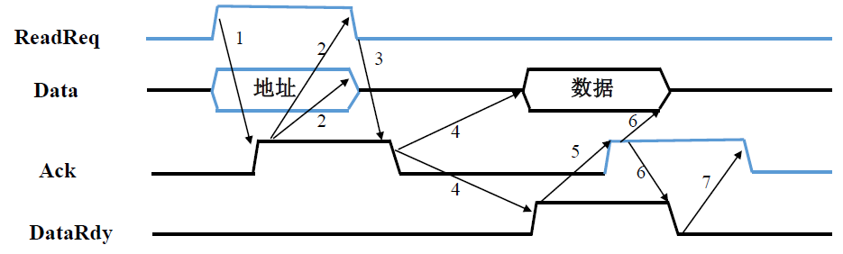
- 同步总线
- 例题2：假设同步总线的时钟周期为50 ns，每次传输需要一个时钟周期，异步总线每次握手需要40 ns 。两个总线都是32 位宽，存储器的数据准备时间为230 ns 。当从存储器中读出一个32 位的字时，计算两个总线的数据传输速率。
- 同步总线：数据传输速率= 32bit / (50 + 250 + 50)ns = 91.4Mbps
- 数据准备时间是250，因为必须必须是完整的时钟周期
- 异步总线：数据传输速率= 32bit / (40 + 230 + 120)ns = 82.1Mbps
- 同步总线：数据传输速率= 32bit / (50 + 250 + 50)ns = 91.4Mbps
- 例题3：假设系统具有以下特征
1.它支持访问大小为4 到16 个字（每个字32 位）的块
2.同步总线具有64 位宽和200MHz 时钟频率，需要1 个时钟周期来传输地址或64 位数据
3.在两个总线事务之间有2 个空闲时钟周期
4.内存访问时准备前4 个字需要200ns，后面每4 个字准备需要20ns
5.当前面的数据在总线上传输时，内存可以同时读取后面的数据
如果读取256 个字，分别计算每次传输4 个字和16 个字时的数据传输速率、传输时间和每秒总线事务数- 每次传输4 个字
- 总线事务：地址+ 4 个字
- 地址传输：1 个时钟周期
- 数据准备：200ns (40 个时钟周期）
- 数据传输：2 个时钟周期
- 空闲：2 个时钟周期
- 总共：256 / 4 * (1 + 40 + 2 + 2) = 2880 个时钟周期
- 传输时间= 2880 * 5ns = 14400ns
- 每秒总线事务数= (256 / 4) * (1s / 14400ns) = 4.44M
- 数据传输速率= 256 * 32bit / 14400ns = 568.9Mbps
- 总线事务：地址+ 4 个字
- 每次传输16 个字
- 总线事务：地址+ 16 个字
- 地址传输：1 个时钟周期
- 数据准备（前4 个字）：200ns（40 个时钟周期）
- 数据传输：2 个时钟周期（同时读取后4 个字：20ns）
- 空闲：2 个时钟周期
- 总共：256 / 16 (1 + 40 + 3max(2, 4)+ 2 + 2) = 912 个时钟周期
- 传输时间= 912 * 5ns = 4560ns
- 每秒总线事务数= 16 * 1s / 4560ns = 3.51M
- 数据传输速率= 256 * 32bit / 4560ns = 1796.5Mbps
- 总线事务：地址+ 16 个字
- 每次传输4 个字
- 提高总线的数据传输率
- 提高时钟频率（时钟周期数不变的情况下）
- 增加数据总线宽度
- 每次传输更多的数据（成本：更多的总线线路）
- 块传输
- 传输一次地址就传输一块数据（成本：高复杂性）
- 分离总线事务
- 减少总线空闲时间（成本：复杂性高，增加每个事务的持续时间）
- 分离地址线和数据线
- 同时传输地址和数据（成本：更多的总线线路）
- 例题1：假设同步总线的时钟周期为50 ns，每次传输需要一个时钟周期，异步总线每次握手需要40 ns 。两个总线都是32 位宽，内存的数据准备时间为200 ns 。当从存储器中读出一个32 位的字时，计算两个总线的数据传输速率。
- 总线层次结构
- 单总线结构：CPU、存储器和I/O 模块都连接到一条系统总线
- 优点：简单，易于扩展
- 缺点：连接的设备越多，总线长度越大，传输延迟也就越大；聚集的传输请求接近总线容量时，总线成为瓶颈
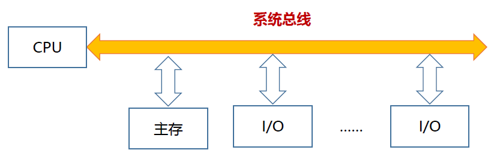
- 双总线结构I
- 在CPU 和存储器中间增加一个存储器总线
- 优点：增加CPU 和存储器之间的传输效率，同时降低系统总线的负担
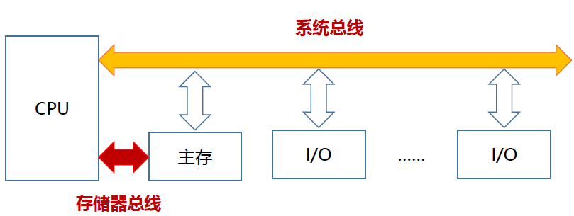
- 双总线结构II
- 将系统总线分为存储器总线、I/O 总线和IOP (input/output）
- 优点：降低I/O 对总线的负担
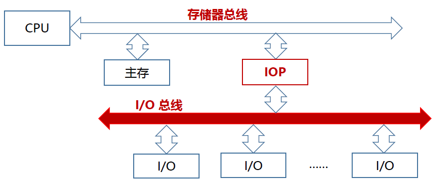
- 多总线结构I
- 增加一个本地总线（local bus bus）来连接CPU 和cache
- 优点：分离了CPU 和I/O 的交互
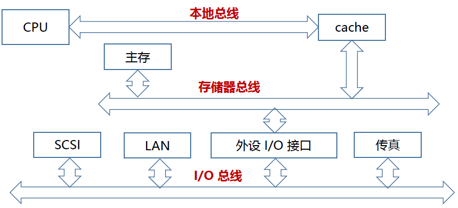
- 多总线结构II
- 将系统总线分为存储器总线、I/O 总线和DMA 总线
- 优点：增加I/O 效率
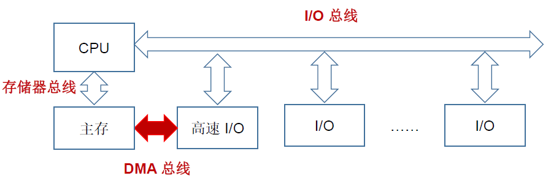
- 多总线结构III
- 增加一个高速I/O 总线来连接高速设备
- 优点：增加I/O 交互效率
- 单总线结构：CPU、存储器和I/O 模块都连接到一条系统总线
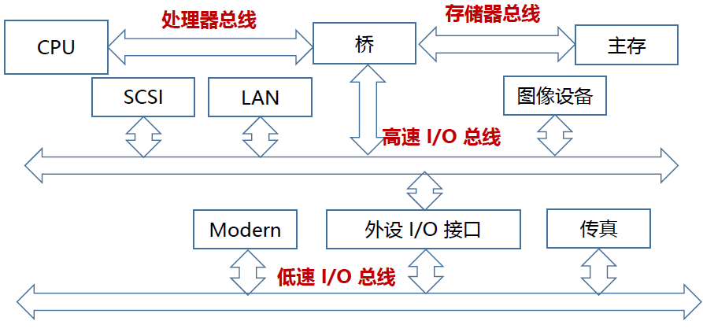
本博客所有文章除特别声明外，均采用 CC BY-NC-SA 4.0 许可协议。转载请注明来自 Sprooc！
评论